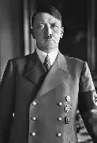

|
 |
Führer of Germany |
| Preceded by Paul von Hindenburg (as President) Succeeded by Karl Dönitz (as President) |
Chancellor of Germany |
In office |
| President: Paul von Hindenburg (1933–1934) Vice Chancellor: Franz von Papen (1933–1934) Preceded by: Kurt von Schleicher Succeeded by: Joseph Goebbels |
About Hitler
Adolf Hitler (20 April 1889 – 30 April 1945) was an Austrian-born German politician who became dictator of Germany during the Nazi era. He rose to power as leader of the Nazi Party, becoming Chancellor in 1933 and later assuming the title of Führer und Reichskanzler in 1934. Germany's invasion of Poland in 1939 under his leadership marked the outbreak of the Second World War. Hitler was closely involved in directing German military operations and orchestrating the Holocaust, which led to the genocide of six million Jews and millions of other victims.
His aggressive expansionist policies, racist ideology, and totalitarian rule transformed Germany into a dictatorship. The war he initiated caused unprecedented destruction and loss of life, making World War II the deadliest conflict in history.
Ancestry
Adolf Hitler was born on 20 April 1889 in Braunau am Inn, Austria-Hungary. He was the fourth of six children of Alois Hitler and Klara Pölzl. His early life was marked by family conflicts, the death of siblings, and strained relations with his father. Despite showing interest in art, his father pushed him toward a technical career, leading to academic struggles and eventual withdrawal from formal education.
Hitler grew up with strong nationalist sentiments, rejecting the Habsburg monarchy and embracing German identity. After his father’s death, his academic performance improved briefly, but he left school without clear career plans, later pursuing politics and rising to power.